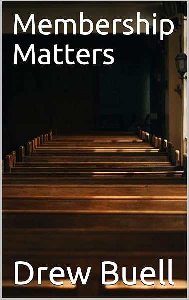

Dr. Drew Buell
Pastor-teacher of Cool Community Church since 2010. Drew preaches through books of the Bible verse by verse, and most of what he writes begins in the pulpit.
- Nine books in print
- Sermons & devotionals on YouTube
- Essays on Substack

From the pulpit to the page
Every title is available on Amazon. Select a cover to go to its page.
Believe…
An expositional commentary on John 1:1–2:25, and the first volume of a series through the Gospel of John. The opening chapters of John, where the Word becomes flesh and every sign asks one question: will you believe?
Get it on Amazon Ten Words to Build Your Life On2026
Ten Words to Build Your Life On2026
 Let All Mortal Flesh Keep Silence2025 · Advent devotional
Let All Mortal Flesh Keep Silence2025 · Advent devotional
 Heaven: Our Forever Home2025
Heaven: Our Forever Home2025
 I Still Do2025
A Christmas Carol: Reader's Edition2022
I Still Do2025
A Christmas Carol: Reader's Edition2022
 Journeys: An Adoption Story2022
Journeys: An Adoption Story2022
 We Are Not Descended from Fearful Men2021
We Are Not Descended from Fearful Men2021

Membership Matters2019What's next? More volumes of Believe, a book on the doctrines of grace, and a Philippians devotional are on the desk. Follow their progress at Cool Publishers.
Books in progress →Watch and listen
Sermon series and short devotionals on YouTube. Choose a series below to play it here.
Sermons are moving to YouTube a few at a time. Until they're all there, the full archive is on the Cool Community Church website and in the church app.
Latest on Substack
New essays delivered by email.
A pastor who writes
Drew Buell has served as pastor-teacher of Cool Community Church in the Sierra foothills of Northern California since 2010. He preaches verse by verse through books of the Bible, and most of what he writes begins in the pulpit before it is reworked for the page.
Drew graduated from The Master's University in 2001 with a degree in Bible Exposition. He went on to The Master's Seminary, completing a Master of Divinity in 2005 and a Doctor of Ministry in 2021. Before coming to Cool he served as associate pastor of student ministries and worship at Pine Mountain Christian Community Church, and then as an associate pastor at Emmanuel Baptist Church in Mount Vernon, Washington.
Drew grew up in a Christian home with godly parents. He married Amy in 2001, and the Lord has given them four children: Micah, Cody, Luke, and Ruth.
- ChurchPastor-Teacher, Cool Community Church, since 2010
- EducationB.A., The Master's University
M.Div. & D.Min., The Master's Seminary - BooksNine titles, from Advent devotionals to an expositional commentary on John
- HomeCool, California, with Amy and their four children
Worship with us in the Sierra foothills
Cool Community Church exists to know Christ and to make Him known, through commitment to the Word of God, the people of God, and the glory of God.
Sunday mornings at 10:30 · Cool, California
Cool Drone Footage
When he's not in the study or the pulpit, Drew enjoys flying his drone to capture cool footage: granite summits, alpine lakes, and the canyons of the American River, from the High Sierra down to the foothills.
Watch the footage →